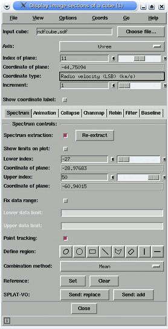
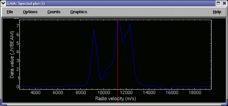

Using this toolbox you can interactively display successive images from the planes of a cube and spectra from the remaining dimension. The aim is to be as efficient as possible at these two jobs, and very good speed is available on machines whose physical memory is greater than the size of the cube.
3D iso-surface and volume visualisation is provided in the View menu.
To view an image plane from the cube, just select the file containing the cube and then use the axis control to choose an axis to step along (normally this will be the dispersion/spectral axis) now either type in the index of the image that you want to view along that axis (in the Index of plane: control) and press return or drag the slider to move through slices. The image display data limits are set once for efficiency, but you can have an autocut applied to each slice by selecting the Autocut item in the Options menu.
The world coordinate value of the image plane displayed is shown in the Coordinate of plane: label and the type of coordinate, if available, in the Coordinate type: label. This information can also be shown in main window, with the image plane, if you select the Show coordinate label: control. That label can be moved around for convenience and the colour and font changed using the Label colour and Label font sub-menus in the Options menu.
Once an image is displayed you are free to analyse it using the usual tools, such as the photometric or image region toolboxes.

Quick start: To display a spectrum extracted from a point, just click, using mouse button 1, on a position on the image. To see a continuously updating spectrum, click and drag around the image. The controls in the Spectrum tab offer enhancements to this basic behaviour.
The extraction limits along the spectral axis are the full range by default. To extract a smaller range of values you can use the Lower index: and Upper index: controls. The new extraction limits are not used until you click on the image again, or press the Re-extract button. To see these limits graphically (that is displayed in the spectrum that is already extracted), select Show limits on plot:.
As well as extracting a spectrum along a point (a pixel), you can extract a spectrum defined by a region by drawing an ARD region shape on the image. This is done by pressing one of the buttons Define region: and dragging out a shape on the image. Each value in the spectrum is evaluated by combining all the pixels within the region. By default this is just a simple mean, but you can choose a median instead (this option will be more suited for cleaning up flat regions of sky than those with gradients). How to draw regions on images is described in Image Regions Toolbox help.
Note that you can draw more than one shape, but the extracted spectrum is just that of the selected shapes. To select more than one shape you click on it while holding down the control key. You should also note that when interacting with shapes the single pixel extraction mode is still enabled, so if you click off the region you will get another extracted spectrum. This can be confusing so you can disable this by deselecting Point tracking:
To remove shapes from the image you need to use the Graphics menu options Clear or Delete. You are also free to use any of the other configuration options in the Graphics menu, like outline thickness, fill, stipple etc.
The data limits of the extracted spectrum are fixed to the minimum and maximum of the pixel or region clicked on. Subsequent drags (without releasing) continue to use this same range. In this mode it's easy to compare spectra and spectral extraction is fast. If you'd like to have the data range always set to the minimum and maximum select the Options->Autoscale item in the spectral plot window. The final option is to fix the data range to some preset values that you'd like. To use this select the Fix data range: control and enter the data range you want. Remember to press return to apply a limit.
It is possible to have two extracted spectra on display at the same time. The second one is known as a reference spectrum. To create a reference spectrum press the Set in the Reference: line. This copies the currently extracted spectrum to be the reference one (and can be a region extracted spectrum), naturally Clear removes the reference spectrum. Note that the reference spectrum does not take part in the auto-scaling of the plot.
Other various action tabs of controls are shown in the lower pane. These currently allow you to animate through a range of indices, collapse the cube to a white-light image, create a "channel map" and subtract a fitted baselines.
Using these controls you can automatically step through a range of indices. At the end of the range you can choose to either stop (Off), continuously start again from the beginning (On) or continuously reverse direction (Rock 'n Roll). The limits to animate over can be controlled using the sliders, or you can select "Show limits on plot:" to interact with a graphic displayed over the spectral plot.
The animation can be saved to an animated GIF by selecting the Capture item. The capture process requires that the main window is visible, and not overlaid by any other window. If you want to change the size of the animation GIF then you can only do that by resizing the main window. Clearly if you have a cube with many planes then that will take a lot of memory and time to process, so use the limits to pick out only the range you require. The animated GIF will be written into the current directory and will be called GaiaAnimation.gif, just move this file when you want to keep it.
These controls run the KAPPA application COLLAPSE to create white-light images of various kinds. The collapse range is controlled as in the Animation tab. The combination method provides a wide range of methods, including:
These controls run the KAPPA application CHANMAP to create a channel map image. A channel map image consists of image tiles, each tile being the result of collapsing a range of planes in a cube. These ranges are chosen to create a given number of tiles between two limits (which can be the whole cube).
The full range for collapsing is controlled as in the Animation tab and same combination methods are used as in the Collapse tab (see above).
Once a channel-map is displayed it can have a grid overlaid, you can inspect the coordinates of each tile and compare positions across all tiles. The average values of the collapsed axis can be seen by clicking on a tile and inspecting the Selected coord: readout, this click will also result in an attempt to display a marker at the equivalent positions on all the other tiles.
Fuller coordinate information can also be tracked in the Image-Analysis->Change coordinates->Show all coordinates... toolbox, just track the mouse over the tile you want to investigate.
These controls allow you to rebin the whole cube to increase the signal to noise, but at the expense of resolution. The rebinning can be done by simple summation of the data, or by taking the mean.
The rebinning is controlled by three bin factors, one for each dimension, so it is possible to avoid rebinning in either the image or spectral dimensions, if required (by setting the bin factor for that axis to 1).
The resultant cube must have a unique name (you cannot resize a cube on disk and then expect GAIA to sensibly reload it), so the a name is generated using a prefix (the default of GaiaTempCubeRebin will result in a new cube called GaiaTempCubeRebin1.sdf and so on). Prefixes that include the substring Temp will be deleted when GAIA closes.
These controls allow you to smooth the image planes of the cube using either a block or gaussian filter. The block filter can be a simple square or a rectangle. The gaussian filter can be symmetric or ellipsoidal, at a given angle.
When filtering using a square or rectangle filter, you must define the size of the edges and what method to use to combine the data. That can be the mean or median. Clearly the median will be useful for data that have spiky noise features.
When filtering using a gaussian, the size of the filter is specified using the full width at half maximum (FWHM), but the area over which the gaussian is evaluated is determined by the Box size values. Clearly these should be set to several times the size of the FWHM. The orientation of the elliptical gaussian is in degrees running anti-clockwise from the X axis (that's to positive Y). All sizes are measured in pixels.
The cube naming scheme follows that used by the Rebin description (although in this case the cube size does not change).
These controls run the KAPPA application MFITTREND to fit and subtract baselines from each spectrum in the cube. The baseline is estimated as a polynomial fit, of the selected order. Each spectrum is fitted independently and the data selected for each fit can include up to four ranges along the spectral axis. To define a range you must Enable it and then chose the lower and upper indices. These can be visualised in the spectral plot by selecting Show limits on plot: (in fact you can drag and resize these on the plot). Once ran the new cube replaces the old one and you can inspect it for success. If you want to keep the new cube then inspect the current directory for the latest file called GaiaTempCube[n].sdf (where [n] is some integer that increments for each new cube). This will not be deleted when GAIA exits (so you must do this yourself from time-to-time).
The indices used to select an image plane are what are normally known as NDF pixel indices. For FITS cubes this will be just the grid indices (starting from 1 to the length of the chosen axis), for NDFs this will include the origin (this will also be true of FITS files converted from NDFs).
When your cube has a world coordinate system defined (either as an NDF WCS component, or as FITS headers) you will also see the coordinate of the current slice displayed, together with a description of its meaning and units.
For coordinate systems that define a spectral axis, you can also choose to transform into other supported coordinate systems. These are listed in the Coords menu (currently: angstroms, nm, mm, micrometres, GHz, MHz, THz, KHz, J, ergs, eV, keV and 1/m, plus m/s and km/s (radio), and redshift if a rest frequency is defined). Just choose one and the slice coordinates and the spectral plot (if active) will be redisplayed to show your new coordinates. This menu is replicated in the spectral plot for convenience. To return to the initial system just choose the Default item.
The Go menu provides you with a quick menu of cubes that have been recently loaded. To revisit one just select its name in the list. Cubes that have been loaded in this session can also be switched back and forth using the Back and Forward items. When using these an attempt to preserve any extraction limits will be made. This will be perfect if the size of the spectral dimension of the cube doesn't change, otherwise a transformation from the old coordinates to the new coordinates will be attempted. That will generally be less precise as the coordinates will always be rounded to the nearest pixel position.
The View menu item Fits header..., will open a window and display any FITS headers associated with the cube (note if you look at the FITS headers in the main window these will only apply to the extracted image).
The View menu item Select HDU.. allows you to select other cube components in the current file for display (i.e. other cubes in FITS extensions, or NDFs at the same level in the container file).
The View menu item Import CUPID catalogue imports 3D catalogues produced by the CUPID package. See:
The View menu has two items for viewing and interacting with your cube. The first allows you to draw 3D surfaces at specified data values, so called iso-surfaces, and the second to view a representation of the the whole cube between two data limits using volume rendering.
Which tool to use depends on what aspects of your data you're trying to perceive, but in general since iso-surfaces are quicker to render and use less memory, that's probably the best tool to start with.
Each tool will also display the position of the current slice and the currently extracted spectrum (region or line) and can display 3D axes. They can also display additional cubes, as iso-surfaces, so that you can intercompare data. See the help in these windows for a fuller description.
Volume visualisation is a CPU and memory intensive operation, so a fast machine with a lot of memory is required. Equally important is a good graphics setup with hardware support for OpenGL. If you don't have that slow software rendering will be used.
Sometimes you'll want to inspect two related data cubes. There are two ways to do this. The first is to use one of the volume visualisation tools to draw iso-surfaces from the second cube over the first, the second is to display the second cube in a GAIA clone (use the File->New Window item in the main window) and then to select that clone as a slave. Do this using the Options->Slaves menu. At present a slave will use the same indices for positioning the slice and extracting a spectrum, so the cubes must have the same dimensions. Note a slave must already be extracting a spectrum for that control to work and a slave cannot enslave its master (that will force the master to drop the slave).
Each plane from a cube can be contoured using the contour toolbox found in Image-Analysis->Contouring.... Using this toolbox you can also contour another image over the cube slice and the contours will remain displayed as you move slice, thus allowing you to compare a continuum image with each slice in the cube.
To get the reverse effect, contouring each slice over a continuum image, you must display your cube and image in separate windows (using the File->New window item in the main window), and then open the contour toolbox associated with the continuum window. Now select the other window displaying the cube for contouring and enter some levels. Contouring will now contour each slice, the speed, range and step between slices is determined by the values in the Animation section, there is also an option to just contour the current slice.
The toolbox should handle both NDF and FITS data cubes with more-or-less equal efficiency (NDFs may be slightly more efficient for some integer data types). Other formats will be converted into NDFs on the fly. For large datasets that isn't optimal, so you should convert the data yourself to NDF first. The CONVERT package has many applications for performing these conversions. If you want to use any tools that operate on the full cube data, rather than a plane (so that's any operations ran from this window, rather than any of the usual image analysis toolboxes), then having your data in NDF format is definitely preferred, as that will also involve a conversion to NDF anyway.
Normally the cube file is memory mapped to access the data. Usually this gives a good compromise between startup speed and access speed. However, for very large cubes (2Gb and up) the access speed can suffer as the data is only read incrementally on demand. This is particularly noticeable when plotting spectra (which are usually accessed sparsely in the third dimension), typically this manifests itself as a very slow response, which suddenly becomes much faster after clicking on the cube many times. To avoid this behaviour you can choose to read the cube into core memory (but make sure you have sufficient first), in one chunk. To do this select the Memory map cube data option in the Options menu (and wait a while).
When using some image analysis tools the currently displayed plane will be replaced with an actual NDF (for speed the image plane is displayed using a skeletal NDF with dynamically updated data, so cannot be directly processed by any external processes). After analysis you are free to continue moving through slices. A side-effect of this quest for speed is that the data processed by the 2D analysis tools will not be a full NDF, that is it currently does not contain any addition components, such as variance or quality. If this is important you will need to extract the plane from the cube using the KAPPA task NDFCOPY, with a suitable NDF section (this is shown as part of the slice name in the main window) and open that normally in GAIA.
When displaying NDFs it is possible to inspect the other data components, variance, error and quality, by selecting the component in the Options menu. If a component doesn't exist then you'll just get a warning. Note that when using the 2D analysis tools on the cube you'll be operating on the displayed component, not the data component. The error component is the square root of the variance component (the standard deviation).
The spectral display tool is just that and offers no analysis features. If you want to perform a measurement on a spectrum (or say compare it with one from the VO, or with many from the same cube) then you can either extract it (using some command-line tool like KAPPA NDFCOPY, or you can save the spectrum to a simple text format -- do this in the File menu of the spectral plot), or send it to the Starlink SPLAT-VO program (for region spectra or non-NDF formats the spectrum will be saved to the text format before being sent). If you want to do this press the Send button. This will be greyed out if SPLAT-VO is not available on your system.